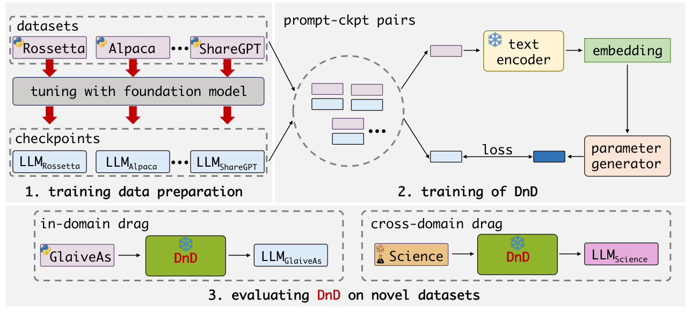
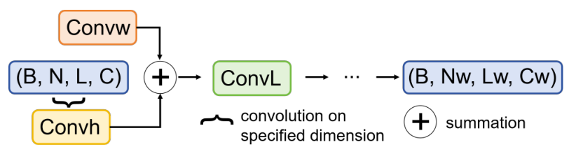
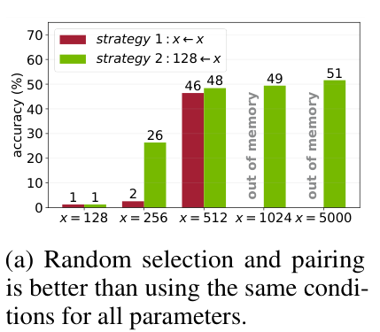
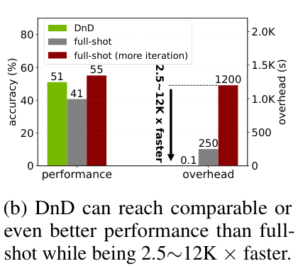
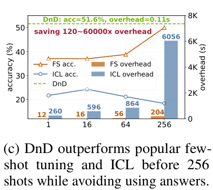
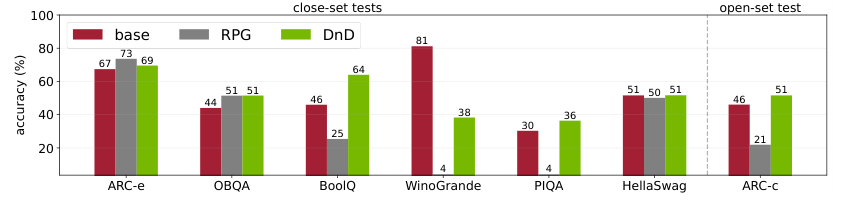
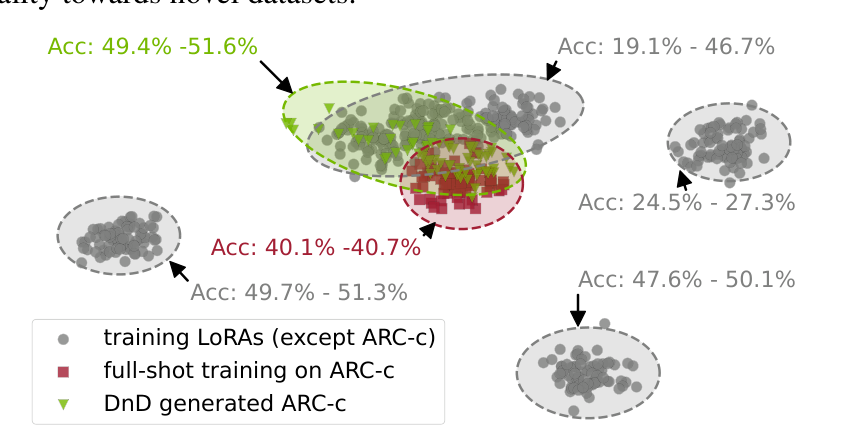

4 张 A100 半天 vs 0.11 秒
先把账算清楚，再看方法。LLM 定制化的现实是：预训练给了模型广度，部署却要求深度——内部数据、领域黑话、专属语气。PEFT（尤其是 LoRA）把"训练多少参数"的问题解决了，但没解决"训练多少次"的问题：每来一个新数据集，就要重新跑一遍优化。论文开篇给了个具体的数字：给最小的 Qwen2.5-0.5B 做 LoRA，仍然要占用 4 张 A100 半天。当你要服务一百个客户、一千个内部任务时，优化本身就成了系统瓶颈。
被折叠的不是"训练"，而是"每次"
DnD 并没有消灭训练——它把训练前置且摊销了：预先在多个数据集上训出一批 LoRA 检查点（这一步照旧昂贵），再训练一个"条件→权重"生成器（一次性成本）。之后每个新任务只付一次前向传播的钱。这是典型的 amortized inference（摊销推断）结构，与摊销变分推断、diffusion 的蒸馏采样同属一个家族。理解了这一点，你就能预判它的适用边界：任务分布越接近训练时的检查点分布，摊销越划算；越偏离，风险越大——第 10 章 Table 4c 的"训练集 ≤2 个就失效（2-5 组 −1.4；3 个即转正 +0.8）"正是这个逻辑的经验体现。
LoRA 是训练数据的函数：把"数据→梯度→权重"折叠成"数据→权重"
式 (1)：LoRA 的目标（论文 §2.1）
$$\min_{A,B}\ \mathcal{L}\big(W_0 + BA,\ D\big)$$$W_0$：冻结基座权重；$B\in\mathbb{R}^{d\times r},A\in\mathbb{R}^{r\times k}$，$r\ll\min(d,k)$；$D$：微调数据集。全文唯一的"重"公式，之后的公式都只是数据管线。
这个式子人人都见过，但 DnD 的作者在里面读出了不同的东西：把 $\mathcal{L}$ 视为黑盒、把 $D$ 视为自变量、把解 $(A^*,B^*)$ 视为因变量。梯度下降只是求解这个函数的"求解器"——而求解器是可以被替换、甚至被学习的。若记 $\Delta W = BA$，那么 $\Delta W$ 与 $D$ 之间存在一个（多值的、依赖于优化轨迹的）映射关系。DnD 的全部野心，就是用一个小网络直接参数化这个映射：$D$ 的样本（prompts）$\longrightarrow \Delta W$。
概念转换：三种"驱动力量"
同一目标的三种实现路径，对应三代方法：
- PEFT：数据 $D$ 是原料，梯度是动力 → 每任务一次优化；
- 条件参数生成：条件 $c$ 是原料，生成器是动力 → 一次前向；
- DnD：无标注 prompts 是原料，在 prompt-检查点对上回归出来的生成器是动力 → 一次前向，且条件语义零成本获得（不用标注、不用标签）。
反事实分析：如果没有 LoRA 的低秩结构，这条路走得通吗？
想一下为什么 DnD 生成的是 LoRA 而不是全部权重。7B 模型约 70 亿参数（fp16 约 14GB），直接生成意味着生成器的输出空间是 $10^{10}$ 量级——RPG 那套 recurrent diffusion 生成 2 亿参数要数分钟，7B 全量在算力上就不现实。LoRA 把目标空间压到 $\sum_{\ell} r_\ell(d_\ell+k_\ell)$ 量级（rank 8 时通常只有基础模型的 0.1%~1%），且 $\Delta W$ 分布在以 0 为中心的低维流形上——方差小、结构强、天然适合回归。反过来说，这也意味着 DnD 的上限被 LoRA 表达力封顶：第 13 章会讨论 rank 固定带来的天花板（科研问题 Q3）。
参数生成五年史：从"生成权重"到"按需生成权重"
为什么 DnD 放弃了扩散？—— 一道效率账
p-diff/RPG 生成参数要跑完整反向扩散链（几十步网络前向）；DnD 是确定性单步回归。代价是放弃分布建模：扩散能采样"参数的分布"，回归只能输出"条件对应的点估计"。论文赌的是：对下游适配而言，你要的不是"任何好权重"，而是"匹配当前任务的那一个好权重"——点估计够了，分布是奢侈品。这个赌注与 LLM 推理的时代精神一致（蒸馏、投机解码都在砍采样步数）。但它也埋下隐患：单步回归对多模态的"条件→权重"关系（同一数据集可能对应多个好解）只能学出均值，可能落在流形外——这是 Q3（外推边界）的理论根源。
DnD 全景：三阶段流水线

三阶段为何这样切？——把"贵"与"活"分装进两个阶段
阶段 1（收集检查点）是唯一昂贵的部分，但它对每个（数据集, 基座）组合只需做一次，且产物是通用商品——任何人分享的 LoRA 检查点（HuggingFace 上的几万个 adapter）理论上都能直接充当作训料，不必自己训。阶段 2+3（配对与训练生成器）是便宜但需要"活水"的部分：随机配对的多样性决定泛化（§10）。这个切分意味着 DnD 的商业模式天生是"公共检查点库 + 私有生成器"——阶段 1 的成本可以被整个社区摊薄，这也是结语"利用互联网现成检查点"愿景的伏笔。反过来看，阶段 1 的质量不可控（别人分享的 LoRA 训练配方各异、有些已过拟合）会是实践中的第一坑。
组件分解：输入/输出/取舍
| 组件 | 输入 → 输出 | 设计选择 | 替代方案 | 取舍 |
|---|---|---|---|---|
| 检查点库 | 数据集 × 两阶段微调 → 快照集 | 温和快照（50-200 步） | 只存最终收敛 LoRA | 快照更"多样"但更弱；§14 假说 H1 的根源 |
| 条件抽取器 | prompt 批 → 嵌入 [B,N,L,C] | Sentence-BERT（冻结） | GloVe/T5/LLM（Table 4b） | 轻量编码器可大 batch；decoder-only 反而失败 |
| 配对策略 | 两个池 → (prompt批, 检查点) | 每迭代独立随机（128←x） | 同一批 prompt 配所有检查点 | 随机性提供"数据集指纹"对比信号；Fig 4a |
| 生成器 | 嵌入 → tokenized LoRA | 级联超卷积块（式 5） | 扩散去噪器 / Transformer | 单步高效、局部归纳偏置适配权重的平移结构 |
| 监督 | 生成 vs 快照 | 逐元素 MSE | 任务损失（在数据上评测） | MSE 便宜稳定；但与"任务表现"间接相关——§14 追问 |
| 挂载 | 生成的 A,B → W0+BA | 直接替换原 LoRA | — | 与推理框架完全兼容，零额外部署成本 |
条件设计：无标注 prompts 为什么是最优条件
DnD 最大的胆量在于条件里没有任何标签、没有任何答案——只有一把从数据集随手抽的 prompt。这凭什么够用？论文援引数据集偏差研究（Liu & He 2025；Zeng et al. 2024）：不同数据集的样本带有强烈的"指纹"特征（措辞风格、题目格式、主题分布）。prompts 就是数据集的指纹卡片，生成器靠指纹定位"该拖往权重空间的哪个区域"。
式 (2)-(3)：配对与编码
$$[p_1,\cdots,p_I]\ \xrightarrow{\text{randomly pick}}\ \{p_i, m_j\}\ \xleftarrow{\text{randomly pick}}\ [m_1,\cdots,m_J],\qquad c_i = \mathrm{Encoder}(p_i,\ \theta)$$关键细节：配对是跨数据集随机完成的——某个检查点 $m_j$ 这一步配上自己数据集的 prompt，下一步可能配上别人的。随机性迫使生成器只能依赖"指纹→权重"的统计关联，而不是记住固定组合。
推导：为什么"随机配对"等价于最大化条件-权重互信息
把训练目标写成对配对分布 $\pi(c, m)$ 的期望：$\min_\phi\ \mathbb{E}_{(c,m)\sim\pi}\ \|G_\phi(c) - m\|^2$。MSE 最优解是条件均值 $G^*(c) = \mathbb{E}[m \mid c]$。要让 $G^*$ 真正依赖 $c$，需要 $\pi$ 中 给定 c 后 m 的分布足够"尖锐"且随 c 变化——即互信息 $I(c; m)$ 大。
两种配对策略的互信息对比一目了然：
- Strategy 1（固定批）：$m \perp c \mid \text{batch}$——同批 prompt 配一切检查点，$I(c;m)\approx 0$，最优解退化为全局均值 $\mathbb{E}[m]$（一个"万能但平庸"的权重）；
- Strategy 2（每迭代重抽）：跨数据集的随机配对保留了 $c$ 对 $m$ 的预测力，同时残差项 $\mathbb{E}[m|c]-m$ 的方差提供正则（§14）。
这就是"多样性定理"的信息论形式：泛化不是学出来的，是配对分布里保留的。Strategy 1 在 x=512 时也能爬到 46 分（两种策略的完整对比见 §10），因为条件池够大后 batch 内部恰好出现了多样性——与该解释自洽。
消融一：条件里加答案反而崩盘
| 条件类型（ARC-c 测试） | 准确率 | 相对训练 LoRA 39.5 |
|---|---|---|
| 仅 prompts | 51.6 | +12.1 |
| prompts + answers | 27.0 | −12.5 |
| 混合（prompt:answer = 4:1） | 49.7 | +10.2 |
为什么加信息反而变差？论文的归因：常识推理数据集的答案缺乏多样性（无非 A/B/C/D），把答案拼进条件稀释了数据集指纹，让不同数据集的条件嵌入变得难以区分。附录 B.3 补了对照：数学任务上答案长且多样，answer 条件能到 64.0（prompt 66.3 仍更好）。合并两组实验读出的普适结论：条件的价值 ∝ 条件的"数据集可区分性"，而不是"信息量"。
decoder-only 失败的深层含义：条件表示要"保留差异"，不要"强行统一"
Sentence-BERT/T5/GloVe 的共同点是非生成式表示——同一批 prompt 里数据集 A 和数据集 B 的嵌入分布保持天然的距离。而 7B decoder-only 模型见过太多"接答案"的语境，倾向把不同数据集的 prompt 都映到"即将作答"的相似状态——差异被压平，指纹失效。这给所有"LLM 当 encoder"的设计敲了警钟：表征的任务一致性（统一空间）与可分性（保留差异）是一对张力，条件生成要的是后者。
生成器解剖：超卷积解码器的三向卷积

条件嵌入是四维张量 $[B, N, L, C]$（批、prompt 批长、序列长、通道），目标是 tokenized 权重 $[B, N_w, L_w, C_w]$。怎么"卷"过去？诀窍是轮换扮演：每次卷积把两个维度当作特征图（H×W），剩下的维度当通道——于是一个 2D 卷积就能在任意一对维度之间交换信息。论文式 (5)：
式 (5)：超卷积块（附录 A.3，逐字核对）
$$c^l_W = \mathrm{Conv}^1_H\big(\mathrm{Conv}^1_W(c^{l-1})\big),\qquad c^l_H = \mathrm{Conv}^2_W\big(\mathrm{Conv}^2_H(c^{l-1})\big)$$ $$c^l = \mathrm{Conv}_L\big(c^l_W + c^l_H + b_3\big)$$变量表：$c^{l}$ 第 $l$ 块隐状态；$c^0$ 为条件嵌入；$b_3$ 可学习偏置。每块 = 2×ConvW + 2×ConvH + 1×ConvL，共 5 个卷积。
tokenization：把权重变成"图像"
沿 RPG 的做法，每层参数（如 $W\in\mathbb{R}^{d\times k}$ 的 $\Delta W=BA$ 展平序列）被切成不重叠的等长段 + padding，排成 $[N_w, L_w, C_w]$ 的"权重图像"。这一步看似工程细节，实则决定了整个学习的性质：它把"回归权重"变成了"回归一张结构规则的图像"，于是卷积的平移等变性、局部性都变成合理的归纳偏置——相邻的权重 token 往往对应相邻的神经元，它们的适配方向确实相关。
成本数学：为什么这套解码器生成得起 7B？
设单个卷积核 $k\times k$、输入通道 $C_{in}$、输出 $C_{out}$、特征图 $H\times W$，FLOPs $\approx 2k^2 C_{in}C_{out} HW$。以 7B coding 配置（Table 8 末级 $(4928, 16, 512)$）最重一层计：$2\cdot 3^2 \cdot 512^2 \cdot (4928 \times 16) \approx 3.7\times 10^{11}$ FLOPs/块。一张 A100 的 bf16 算力约 312 TFLOPS → 单块毫秒级；全程几十个块 ⇒ 亚秒级（实测 0.73s，Table 13，含编码与 I/O）。对照 RPG 的几十步去噪（每步过完整网络），单步回归的优势是结构性的，不是工程调优来的。
推导：感受野如何覆盖"权重图像"？
超卷积没有 stride/pooling，每经过一个 $k\times k$ 卷积，感受野沿该轴增长 $k-1$。每块沿 L 轴有 3 次卷积（2×ConvW + 1×ConvL），故 $L$ 块后感受野 $R_L = 1 + 3L(k-1)$；取 $k=3$、常识任务 8 块（Table 8 的 8 个级联形状）→ $R_L = 49$，而末级 $L_w = 8$——感受野早已覆盖整张权重图像。这说明：① 条件信息从第一次卷积就沿 N 轴（ConvH/ConvL）注入，逐块传播全图；② "相邻权重 token 相关"的局部性假设是合理归纳偏置（同层相邻神经元权重相关），无需全局注意力；③ 若任务需要长程权重关联（如跨层结构），此架构天然受限——这是它选 LoRA（层内局部适配）而非全量权重生成的架构层原因。
训练配方精读：监督信号其实是"半成品"
| 配置项（Table 7） | 常识 0.5B | 代码 1.5B/7B | 数学 1.5B/7B | 多模态 3B |
|---|---|---|---|---|
| batch size | 128 | 128 / 48 | 128 / 48 | 64 |
| prompt 批长 N | 128 | 16（§3.1 写 64） | 32（§3.1 写 64） | 16（§3.1 写 32） |
| 优化器 / lr | AdamW · 3e-5 · 5000 步 · wd 0.1 · grad clip 1.0 | |||
| noise aug. amplitude | 1e-4（全文未解释增广对象与方式） | |||
附录 A.4 揭示了监督信号的构成：两阶段收集——先在目标数据集预训练（lr 1e-4，75~8000 步），再以小学习率（1e-5/1e-6）微调 50~200 步，每步存一个快照。也就是说，DnD 学着模仿的"目标权重"，大部分是刚适配没多久、还在轨迹早段的半成品。这解释了两个表层反常：
- 为什么 DnD 敢说"赢过训练 LoRA"？ 参照系（平均训练 LoRA 在没见过的数据集上的表现）本来就很弱——Table 10 里 BoolQ 检查点在 5 个数据集上直接归零。
- 为什么 full-shot 练 300 步后反超 DnD？ Fig 4b：ARC-c full-shot 从 41（约 75 迭代）涨到 55（300 迭代），而 DnD 是 51——生成器学的是"轨迹早段"的权重，自然封顶在那附近。（口径注：常识任务的快照=预训练 75 步+微调 1~50 步；代码/数学是 4000 步预训练+100 步快照，与 Fig 4b 的"75 iterations full-shot"只是量级相近、并非同一口径。）
| 检查点收集（Table 9） | 常识 | 代码 | 数学 | 多模态 |
|---|---|---|---|---|
| 预训练 lr / 步数 | 1e-4 / 75 | 1e-4 / 4000 | 1e-4 / 4000 | 1e-4 / 8000 |
| 预训练 batch / 样本数 | 32 / 5000 | 64 / 10000 | 64 / 10000 | 64 / 100000 |
| 微调 lr / 快照步数 | 1e-5 / 50 | 1e-6 / 100 | 1e-6 / 100 | 1e-6 / 200 |
"半成品监督"是缺陷还是特性？——取决于你问哪个问题
从"还原最强 LoRA"的角度看，这是天花板锁死：生成器最多学会"75 步水平的适配"，永远够不到 300 步的 55 分。但从"泛化"的角度看，半成品快照反而是更丰富的监督：同一数据集的相邻快照构成一条低曲率的适配轨迹，生成器在轨迹上回归，等价于学了"这个数据集把基座往哪儿拖"的方向场而非单个终点——方向比终点更可迁移（新数据集的同族方向可能相似，终点则数据集专属）。这也提示一个立刻可做的改进实验：把监督换成"最终 LoRA + 轨迹混合"，看泛化-性能权衡怎么移动（§15 Q3）。
另一处配方悬案：Table 7 的 noise aug. amplitude 1e-4——对什么加噪（条件？权重？）、什么分布、训练还是推理，全文没有任何解释。这类未定义的数据增广往往是复现时的隐藏分水岭（第 13 章 C4）。编码侧还有个值得注意的工程细节：Sentence-BERT 只支持 512 token，代码任务的输入长达 26,624 token——做法是 padding 到 512 的整数倍后切片分别编码；数学/代码任务还要先把 L 维投影到 1000 以防卷积核内存爆炸。
常识推理：leave-one-out 全矩阵精读
设置：7 个常识数据集，轮流藏起一个当考题（leave-one-out），DnD 在其余 6 个的检查点上训练，然后直接对藏起的那一个生成权重。先看总表，再看被主表藏起来的全矩阵。
| 测试集（Qwen2.5-0.5B） | 训练 LoRA 均值 | DnD | 增益 | full-shot（对角线） | DnD vs full-shot |
|---|---|---|---|---|---|
| ARC-e | 37.5 | 68.6 | +31.1 | 59.4 | +9.2 |
| OBQA | 30.2 | 40.8 | +10.6 | 38.4 | +2.4 |
| ARC-c | 39.5 | 51.6 | +12.1 | 40.7 | +10.9 |
| PIQA | 40.5 | 87.9 | +47.4 | 66.2 | +21.7 |
| HellaSwag | 22.4 | 25.9 | +3.5 | 23.4 | +2.5 |
| BoolQ | 13.5 | 44.9 | +31.4 | 22.11 | +22.8 |
| WinoGrande | 38.8 | 50.0 | +11.2 | 50.5 | −0.5 |
三段式精读：数字 → 机制 → 边界
数字：平均增益 +21.0；PIQA 一项 +47.4（40.5→87.9）。机制：训练 LoRA 的均值被灾难性外推拖垮——Table 10 的完整矩阵显示 BoolQ 检查点（答案只有 True/False 两种）在 5/7 个数据集上得 0 分，WinoGrande 检查点在 PIQA 上 0.1 分；而 DnD 的条件是"目标数据集的 prompt 指纹"，它生成的是朝向目标分布的权重，不做单数据集过拟合。边界：HellaSwag 只 +3.5（对抗生成的干扰项让"指纹"的区分力下降？），WinoGrande 罕见地输给 full-shot 0.5 分——生成不是无代价的。
基座模型的 PIQA=16.6%、OBQA=16.6%：低于随机的评测异常
证据：Table 10 中 Qwen2.5-0.5B 基座行：PIQA 16.6（二选一，随机应为 ~50）、OBQA 16.6（五选一，随机 20）。推理：除非基座真的坏到反随机（不可能——Qwen2.5-0.5B 官方 PIQA 约 66+），否则该行的评测管线（选项模板/答案提取/acc_norm）与训练 LoRA 行不同或存在 bug。影响：Table 5"基座 vs DnD"的对比在这些列上被系统性夸大。补救：用 lm-eval-harness 重测基座并公布模板。这也牵连 Figure 5——它的"base"在 OBQA 上是 44（vs Table 10 的 16.6），两处评测协议明显不一致（详见 C5）。
"+21 分"的对照组是"半成品 × 错位任务"
证据：附录 A.4——监督快照仅微调 50-200 步；Table 10——训练 LoRA 在外推任务上大量归零。推理：增益 =（朝向目标分布的权重）−（过拟合别处的弱权重），两部分都贡献了差值。影响：把 "+21" 解读为"DnD 的适配能力超过真实微调"是过度引申；更诚实的表述是"DnD 在没见过的任务上，比'把别的任务微调过的模型'直接拿来用，好得多"——这仍是很有价值的主张（对应现实中的"拿现成 adapter 凑合用"场景），但必须说清楚对照组是什么。补救：增加"训练 LoRA 在自身数据集上的 full-shot"作为对照上界（论文给了对角线，值得在主表突出），以及"多任务合并 LoRA / 模型汤"基线（缺，见 C3）。
代码、数学、多模态：越难的基准，增益越大？
| 任务（骨干） | 基准 | 训练 LoRA 均值 | 基座 | DnD | vs LoRA | vs 基座 |
|---|---|---|---|---|---|---|
| 代码（1.5B） | HumanEval pass@1 / 5 / 10 | 17.6 / 28.6 / 33.2 | 14.7 / 26.5 / 32.3 | 32.7 / 55.3 / 64.1 | +15.1 / +26.7 / +30.9 | +18.0 / +28.8 / +31.8 |
| 数学（1.5B） | gsm8K / MATH | 42.9 / 14.8 | 64.4 / 29.3 | 66.3 / 23.9 | +23.4 / +9.1 | +1.9 / −5.4 |
| 多模态（3B VL） | Math-Vision / Math-Vista | 23.0 / 61.5 | 22.7 / — | 24.3 / 62.3 | +1.3 / +0.8 | +1.6 / — |
| 代码（7B） | LiveCodeBench pass@1 / 5 / 10 | 13.0 / 16.4 / 17.6（半数归零） | 34.1 / 41.6 / 43.8 | 33.4 / 42.1 / 46.0 | +20.3 / +25.7 / +28.4 | −0.7 / +0.5 / +2.2 |
| 数学（7B） | gsm8K | 65.9 | 81.2 | 83.1 | +17.2 | +1.9 |
基座数字取自 Table 11/12 的 "Qwen2.5" 列（与 Table 5 的出入见 §13 C9）。三段式：数字——HumanEval pass@10 相对训练 LoRA 增益 +30.9 最大；机制——训练代码 LoRA 在指令式代码数据上训练，而 HumanEval 是函数补全分布，错位严重：它们的 pass@1 均值只有 17.6，仅比基座 14.7 高 2.9 分；DnD 拿 HumanEval 之外的代码 prompt 指纹做条件，生成的权重反而兼容补全分布——这是"指纹→方向"泛化力的最干净证据。多模态上增益骤减（vs LoRA 仅 +0.8~1.3），因为 MathV360K 是单一数据集训练 → 检查点多样性塌缩到 1，恰好命中 §10 的"多样性不足"区。边界——MATH 上 DnD（23.9）输给基座（29.3）：竞赛数学的 prompt 指纹可能不足以定位"更深推理"的权重方向，或半成品监督天花板在此暴露。
7B 结果的两个读法：好消息与坏消息
好消息：7B 上管线照常工作——gsm8K 83.1 > 基座 81.2，且在 LiveCodeBench 这种强污染控制的基准上，DnD 仍把"半数归零"的训练 LoRA 均值（13.0）拉高到 33.4。坏消息：在基座本身很强的地方，DnD 的增益趋近于零甚至轻微为负——LiveCodeBench pass@1 比基座低 0.7 分（33.4 vs 34.1），pass@5/10 也只 +0.5/+2.2。DnD 的价值区间在"基座弱或分布错位"处，不在"基座已强"处；部署前应先量化错位程度（Q2 的条件空间覆盖度正好可用）。另外 0.5B 时代"动辄 +30"的印象需要校准：那是常识推理上 vs 训练 LoRA 的数字（平均 +21.0、单项最高 +47.4），跨任务的真实增益区间是 +0.8 ~ +31.8（vs 各自基座）。
配对策略：一条"多样性定理"的两个推论

把 Figure 4a 与 Table 4c（训练集数量消融：6→1 个训练集时增益 +12.1→−1.4）放在一起，可以提炼成一个统一命题：DnD 的泛化能力来自"条件-参数"相关性的覆盖密度，而不是任何单一配对的质量。两个推论：
- 推论一（批内多样性）：Strategy 1 用同一批 prompt 配所有检查点，等于告诉生成器"条件不重要，权重自己看着办"。注意它并非永不上涨——条件池扩到 512 时爬到 46 分——但爬升速度远慢于 Strategy 2（同点 48），且在追平之前就被 OOM 掐断（1024/5000 条）。条件-权重互信息立不起来，生成器就退化为"无视条件的权重平均器"。
- 推论二（跨数据集多样性）：Table 4c 中训练集从 6 个砍到 3 个，增益从 +12.1 跳水到 +0.8；≤2 个时翻负（−1.4）——条件空间 coverage 不足，新数据集的指纹落在训练分布外，生成退化为"最近训练检查点的粗略平均"。
从"多样性定理"反推 DnD 的部署前检查清单
把两个推论翻译成工程清单：① 你的新任务 prompts，与训练任务池的嵌入距离分布是什么样？（距离越近，插值越可靠——可直接用 Sentence-BERT 余弦距离估计，零训练成本）；② 你的检查点库覆盖了多少个"不同指纹"的数据集？（≥3 个且语义分散，是论文给出的经验下界）；③ 有没有条件池被单批 prompt 锁死？（正确做法是每迭代重抽）。三条都过，DnD 大概率工作；任何一条不满足，先补数据再谈生成。
顺带回应一个自然的质疑："给 DnD 也喂答案，会不会更强？"——Table 4a 已经回答了：常识任务上 prompt+answer 崩到 27.0。这意味着 Fig 4c 里"FS/ICL 用了答案而 DnD 没用"的信息不对称，在常识域其实是负资产：答案的低多样性会抹平数据集指纹。DnD 的"劣势"恰恰是它的防御。
效率前沿：与 full-shot、few-shot、ICL 的三方对峙


三处倍数口径考据
| 出处 | 倍数 | 对照对象 | 是否可复算 |
|---|---|---|---|
| 摘要 | "up to 12,000× lower overhead than full fine-tuning" | full-shot 300 迭代 1200s ÷ 0.1s | 可复算 ✓ |
| Figure 4b 标注 | "2.5~12K× faster" | 250s÷0.1s≈2500× 到 1200s÷0.1s≈12000× | 可复算 ✓ |
| Figure 4c 标注 | "saving 120~60000× overhead" | 未注明对照；若对 FS/ICL 各 shots 组合取范围，量级可对上，但论文未给算式 | 部分可复算 |
三个数字都对得上各自的隐含对照，但同一篇论文用三套倍数口径而不并排说明，读者引用时极易混用。正确的摘要方式："对 full-shot 2.5~12K×，对 few-shot/ICL 视 shots 数 120~60000×"。
另一个论文没有给、但对部署决策重要的分解：0.11 秒里都发生了什么？论文未拆分编码与生成的耗时占比。按 §6 的成本数学推断（生成器几十个块的卷积 ≈ 每块毫秒级，总计约几十毫秒），Sentence-BERT 对 128 条 384-token prompt 的编码很可能是另一半开销——这意味着批长 N 与输入长度 L 是推理延迟的一阶项（这与 C6 的 N 口径矛盾直接相关：N=16 与 N=128 的推理成本差数倍）。复现者应实测两段耗时，而非照抄总时长。
与 RPG 正面交锋 + 权重空间可视化

先交代这张图的读法边界：Figure 6 是把每个检查点上亿维的 LoRA 参数压成平面上的一个点，论文未说明投影方法（PCA？t-SNE？）与距离度量——而 2D 投影不保持高维空间的近邻关系，下文所有"最近/跳出"的表述都只是"在该投影下的视觉近邻"，应当作示意性证据而非严格论证（这也是 C10 的内容）。

这张散点图比主表更有信息量（但要用对方式）
- "生成 ≠ 检索"的示意性证据：若 DnD 只是"挑一个最像的检查点改改"，它的性能应被训练簇封顶。投影中生成簇（49.4-51.6）位于 full-shot 簇（40.1-40.7）附近但更高、方差极小——更像"在条件引导下内插出一个新点"，而非"外推一个旧点"。但注意：灰色簇中存在 49.7-51.3 的范围（某个训练数据集的快照在 ARC-c 上本来就不差），所以"跳出所有训练簇"是不成立的，成立的是"跳出大多数、且分布更集中"。
- 生成的簇比 full-shot 簇更"自信"：红色 full-shot 簇 40.1-40.7（窄），绿色生成簇 49.4-51.6（同样窄且更高）。生成器不是随机撒点，而是把条件映射到了一个高性能、低方差的区域——MSE 回归天然偏好条件均值，这里的均值恰好是好事（见 §14 H1 的条件期望分析）。
- RPG 的失败模式可诊断：RPG 在 close-set 大体正常（OBQA 51、HellaSwag 50）但在 WinoGrande/PIQA 崩到 4——其二元条件嵌入无法区分训练分布内的任务（条件塌缩）；到 open-set 更是全面失效（21 < base 46）。DnD 的 prompt 条件在同样的 open-set 设定下 51 > base——条件表达力是 open-set 成功的充分条件（至少在这 7 个数据集上）。
批判评估：八条带证据的保留意见
三处加速倍数口径并存，未并排说明
证据：摘要 12,000×；Fig 4b 2.5~12K×；Fig 4c 120~60000×。推理：对照对象分别是 full-shot@300it、full-shot@75-300it、FS/ICL 各 shots。影响：二手引用必然失真。补救：正文已给出并排表（§11），引用时注明口径。
noise augmentation 从未定义
证据：Table 7 出现"noise aug. amplitude 1e-4"，附录无任何解释。推理：大概率对条件嵌入或权重 token 加高斯噪声（继承 p-diff 的做法以防记忆化），但对象不明。影响：这是复现成败的潜在开关——增广对象不同，模型对 OOD 条件的鲁棒性完全不同。补救：向作者求证 / 对照开源代码。
同一基座两套评测数字（Table 10 vs Figure 5）
证据：Qwen2.5-0.5B 在 OBQA：Table 10 = 16.6，Fig 5 = 44；WinoGrande：50.2 vs 81；ARC-e：54.8 vs 67。推理：两处评测模板/指标（acc vs acc_norm、选项顺序、few-shot 设置）不一致。影响：跨图比较全部失效；"DnD vs base"的增益幅度依赖你信哪张图。补救：统一评测协议并公开 prompt 模板。
prompt batch 长度自相矛盾
证据：§3.1 "128, 64, 64, 32 (常识/数学/代码/多模态)" vs Table 7 "128 / 32 / 16 / 16"。推理：疑似正文与附录写作时间不同步。影响：N 直接决定条件聚合的信息量与显存，复现者无所适从。补救：以附录 Table 7 为准并实测两者。
缺失的关键基线：模型汤 / LoRA 合并 / 检索式 adapter 复用
证据：全文未与"把现有 LoRA 按权重/任务相似度加权合并"（model soup、LoRAHub 一类）对比——这是 prompt→权重最便宜的零训练替代品：检索最近数据集的 LoRA 或做凸组合。推理：Fig 6 显示生成簇跳出了所有训练簇，DnD 大概率赢，但"赢多少"必须量化才有说服力。影响：实用价值定位不完整。补救：补一个"最近邻 LoRA / 均值汤"对照，预期 DnD +若干分（这正是 Q1 的探针实验设计）。
关键设计未消融 + 单一骨干家族 + 无权重质量分析
证据：双分支超卷积、MSE vs 任务损失、rank 固定、tokenization 粒度——均无消融；骨干只有 Qwen2.5 系（0.5/1.5/3/7B）；未报告生成权重的奇异谱/与最近训练权重的距离。推理：泛化主张强烈依赖"Qwen 指纹可迁移到 Llama?"这类问题，目前无证据。影响：跨家族使用是最大现实需求。补救：至少一个 Llama-3 检查点库复刻（Q4）。
Table 5 的 HumanEval 行实为 pass@10 口径（且与 Table 11a 冲突）
证据：Table 5 写"HumanEval：基座 32.3 → DnD 64.1（+31.8）"；而 Table 11a 给出基座 pass@1/5/10 = 14.7/26.5/32.3。32.3 恰是 pass@10 的值。推理：Table 5 未标注 k 值，读者会默认 pass@1，把 +31.8 读成单次通过率的提升——实际是 10 次采样的。影响：跨表引用必然失真（本博客初稿即中招）。补救：一律以 Table 3/11 的分 k 数字为准。
Figure 6 的投影方法未说明，且"最佳单 LoRA"其实打败了 DnD
证据：① Fig 6 未说明投影算法与距离度量（见 §12 读法边界）；② Table 10 中，OBQA 检查点在 ARC-c 上得 53.4、BoolQ 检查点 52.0——都高于 DnD 的 51.6。推理：把 §8 的对照从"训练 LoRA 平均"换成"最佳单个训练 LoRA"，DnD 反而落后 1.8 分——"零成本选现有最佳 adapter"是一个论文未对比的强基线（与 C7 同族）。影响：DnD 的净收益 = 相对平均库的提升 − 相对最佳单点的落后，落地时要用"没有现成好 adapter"的场景来定义。补救：补"检索最佳 LoRA"基线；对 Fig 6 补投影方法与高维近邻的核验。
理论视角：生成的权重凭什么"赢过"被训练的权重？
全文最反直觉的事实：DnD 生成的 ARC-c 权重拿到 51.6 分，高于目标数据集自身的 full-shot——40.7 分来自一个真正在 ARC-c 上训练过的模型（Table 10 对角线），而 leave-one-out 设定下 ARC-c 的检查点根本不在 DnD 的监督里。生成的（从未见过目标任务数据的）权重打败了（在目标任务上训练过的）权重。三个不互斥的假说，各配一个可证伪实验：
推导：H1 的数学形式——MSE 最优解是条件期望，而条件期望是"轨迹平均"
MSE 训练的收敛目标是 $G^*(c) = \mathbb{E}[w \mid c]$。把检查点分解为"数据集均值 + 轨迹噪声"：$w = \bar w_{\mathcal{D}} + \varepsilon$，其中 $\bar w_{\mathcal{D}}$ 是该数据集全部快照的均值、$\varepsilon$ 是微调时刻带来的偏移。若条件 $c$ 承载的数据集信息远多于时刻信息（$\varepsilon \perp c$ 近似成立），则：
$$G^*(c) \;=\; \underbrace{\bar w_{\mathcal{D}(c)}}_{\text{轨迹均值项（SWA 式平均）}} \;+\; \underbrace{\mathbb{E}[\varepsilon \mid c]}_{\text{条件特异项}\,\approx\,0}$$即生成器输出 ≈ 目标数据集的隐式权重平均。而权重空间中沿低损失连通路径（linear mode connectivity）的平均点，性能不低于平均前的单点——这正是"生成的赢过被训练的"的第一性解释，也把 H1 从故事升级成了可检验命题：测 $\mathrm{Var}(w \mid c)$ 越大的数据集，DnD 相对单点的增益应越大（方差大→平均收益大）。
边界：若 $\mathbb{P}(w\mid c)$ 多峰（同一任务存在多个不同解），条件均值会落在流形之间——单步回归的结构性风险，Q3 的实验可直接检验。
H1 · 轨迹平均假说（隐式 Model Soup）
主张：训练对的检查点来自微调轨迹的不同时刻，MSE 回归让生成器输出"轨迹的（条件加权）平均"——而平坦区域平均点泛化更好（SWA/model soup 的经典结论）。
预言：把同一数据集的检查点直接算术平均（soup），性能应与 DnD 接近且高于单点；条件改变时应只能解释部分增益。
实验：soup 基线 + 权重距离分解（生成点到轨迹均值的距离 vs 到条件特定方向的距离）。
H2 · 隐式正则假说
主张：超卷积的局部感受野 + MSE 的低频偏好，等价于对权重施加了平滑先验——滤掉了过拟合的高频分量（BoolQ 那种 0/1 硬编码正是高频）。
预言：生成权重的奇异谱应比训练快照更"快衰减"；对生成权重做高频扰动应显著掉分。
实验：谱分析 + 频域过滤消融（低通生成权重 vs 原始）。
H3 · 条件路由先验假说
主张：条件嵌入其实在"选方向"——生成器学到的是检查点库的隐式字典，prompt 指纹决定字典项的线性/非线性组合系数；高性能来自"组合了多个数据集的有用方向，回避了各自的过拟合分量"。
预言：生成的 ΔW 应近似落在训练 ΔW 张成的子空间内（主成分占比高）；HellaSwag（对抗分布）上增益小，因为其"有用方向"与其他常识任务相关性弱。
实验：把生成的 ΔW 投影到训练 ΔW 的 PCA 子空间，测残差能量与性能损失的关系。
三个假说的公共推论：DnD 的"创造性"是有界的
H1 说它输出轨迹均值，H2 说它输出平滑版，H3 说它输出字典组合——三者都预言：DnD 无法产出训练检查点流形之外的新能力（不能把 0.5B 拖成 7B 的水平，不能生成训练任务从未涉及的能力维度）。这与第 9 章"7B 增益收缩"互相印证。对实践者的含义：DnD 是适配的压缩器与路由器，不是能力创造器；对研究者的含义：Q3（流形外推）是这条路线真正的未解难题。
自主科研问题：五个可以立刻动手的谜
条件嵌入到底编码了什么：指纹假说的因果检验
论文用"数据集指纹"类比，但指纹的具体成分不明：是表层统计（prompt 长度、标点分布、选项格式）还是语义主题？若把两个数据集的 prompt 做"格式互换"（ARC 的题干配 BoolQ 的 True/False 选项），生成器会拖向哪个方向？
形式化：令 $c = E(p_{1:i})$，构造反事实条件 $c'$ = 格式统一化后的同批 prompts；测 $\|\Delta W(c) - \Delta W(c')\|$ 与对应性能差。若表层统计主导，统一格式后生成权重应趋同。
检验：线性探针（数据集分类器）读出条件嵌入的信息量；混淆实验（题目格式 × 语义主题 的 2×2 设计）。
锚点：dataset bias（Liu & He 2025；Zeng et al. 2024）；in-context learning 的贝叶斯解释传统。
泛化边界：条件空间的"凸覆盖"判据
Table 4c 显示训练集 ≥3 才有正增益。猜想：新任务条件落在训练条件嵌入的凸包/邻域内时，回归可视为插值（可靠）；落在包外则为外推（崩坏）。能否给出一个训练前就能算出的"可生成性分数"？
形式化：凸包距离 $\mathrm{cov}(c_{new}) = \min_{\lambda \in \Delta} \big\| c_{new} - \textstyle\sum_i \lambda_i c_i \big\|$，其中单纯形 $\Delta = \{\lambda_i \ge 0,\ \sum_i \lambda_i = 1\}$；假设性能增益随 cov 单调递减，拟合增益-cov 曲线，找出拐点。
为什么凸包是对的几何对象？若生成器在条件空间局部近似线性，$G(c_{new}) \approx \sum_i \lambda_i^*\, G(c_i)$。$c_{new}$ 在包内 ⟺ 存在 $\lambda^* \in \Delta$ → 预测是各数据集条件均值的凸组合，按线性模式连通性其性能有下界保障；$c_{new}$ 在包外 → 系数被迫"饱和"到包边界面（部分 $\lambda_i$ 归零、方向外推），性能保证失效。这就把 Table 4c 的"3 个训练集是悬崖"升级成一条可拟合的定量曲线：增益 $\mathrm{gain}(c)$ 对 $\mathrm{cov}(c)$ 的衰减拐点。
检验：在 7 个常识数据集上做全部 21 种 leave-one-out/留二组合，验证曲线；若成立，部署前可以零成本预测"这个任务值不值得用 DnD"。
监督升级：从"半成品快照"到"轨迹 + 终点"能解锁多少？
§7 证明监督是 50-200 步的温和快照，Fig 4b 显示 full-shot 300 步可达 55 分而 DnD 封顶 51.6。把监督换成"轨迹快照 + 最终 LoRA + 损失加权"，生成器能否突破 55？还是 MSE 均值化会把终点拉回均值？
形式化：监督集合 $\mathcal{M} = \{m^{(t)}\}$，学习 $\min_\phi \mathbb{E}\|G_\phi(c) - w(m, t)\|$，其中 $w(m,t)$ 是时间加权；对比 $t\to$ 终点的极限情形。理论工具：权重空间的线性模式连通性（LMC）——若快照间 LMC 成立，均值化无害；否则终点加权必要。
检验：三档监督（纯快照/纯终点/混合）× 三个训练预算，画"监督强度-泛化"权衡曲线。
scaling 律与 tokenization 瓶颈：70B 时代的生成器长什么样？
Table 8 显示 7B 的权重图像已达 $(4928, 16, 512)$，输出 token 数 ≈ 4×10⁷。参数量再 ×10（70B），卷积核内存与输出分辨率如何扩展？级联卷积的通道数是否随 $N_w$ 二次膨胀？
形式化：生成器 FLOPs $\approx \sum_l 2k^2 C_l^2 H_l W_l$；对 Qwen2.5 系 0.5→7B 拟合 $C_l(N_w)$ 的增长律，外推 70B 的生成成本；对比"分层生成 + 低秩共享"（跨层共享前几级特征，只层间生成差异）的省法。
检验：立刻可做的零成本一步——把 Table 13 已有的 3B 点（0.61s / 20.31GB）纳入 0.5→1.5→7B 的外推曲线检验残差；补一个 14B 检查点库属于中期项目，作为本问题的正式实验。
权重走私与数据反演：prompt-to-weights 的暗面
生成器把"任意文本"映射为"可执行权重"——这本身就是一个攻击面：精心设计的 prompt 序列能否诱导出生成带后门的 LoRA（触发器行为）？反过来，生成器是否记忆了训练检查点，使攻击者能从输出权重反推训练数据（成员推断/数据重建）？
形式化：后门检验——在条件空间搜索使 $\Delta W$ 偏离条件流形的对抗方向（PGD on embedding），测生成模型在触发器输入上的 ASR；记忆检验——生成权重与训练检查点的最近邻距离分布 vs 无关权重的分布（假阳性率校准后的成员推断）。
检验：影子生成器 + 蒸馏防记忆化（对照 noise aug 的真实作用——顺便回答 C4）。
小白 → 学者：十四天路线图与工作区阅读地图
第 1-2 天：吃透 PEFT 与权重空间视角
复推式 (1)；读 LoRA 原文与 model soup / SWA 文献，理解"平坦平均"为何泛化——这是 H1 的地基。
第 3-4 天：参数生成前史
Hyper-Representations → p-diff → CondP-Diff/Tina/ORAL → RPG。重点：各自的条件形式与生成步数（本仓库 RPG 博客可直接用）。
第 5-6 天：精读 DnD 全文 + 附录
对照本博客 §7/§13 的取证清单逐项核对（尤其是 Table 7 vs §3.1 的矛盾、noise aug），养成"配方级"阅读习惯。
第 7-8 天：跑通最小管线
用 §17 代码 A/B 在 0.5B + 2 个数据集上复刻 leave-one-out（Table 4c 的 2-1 版），亲眼看到"多样性不足→失效"。
第 9-11 天：三个假说选一个动手
H1 的 soup 基线最便宜（纯权重平均，无需训练）；H3 的子空间投影最深刻。结果无论正负都可写。
第 12-14 天：把问题升级为 proposal
从 Q1-Q5 选一个，写出：形式化、最小实验、预期曲线、与 DnD/T2L/RPG 的差异表。到这里你已具备在这个方向开题的能力。
工作区阅读地图（本仓库已有的相关论文）
| 论文 | 与 DnD 的关系 | 对照片段 |
|---|---|---|
| RPG（本仓库已有解读博客） | 直接前身：递归扩散参数生成 | 扩散 vs 单步回归；二元条件 vs prompts |
| Text-to-LoRA（Sakana AI） | 同期工作：任务描述→LoRA 超网络，单次前向 | 条件粒度：任务描述 vs 原始 prompt 批；训练成本（9 个 LoRA vs DnD 的检查点库） |
| Doc-to-LoRA | 条件再升级：整篇文档→LoRA | 长文档条件的压缩与编码 |
| δ-mem（本仓库已有解读博客） | 另一极：不生成参数，把记忆做成在线状态 | "改权重"vs"带状态"两种测试时适配哲学 |
| e2e-TTT / inplace-TTT | 测试时训练路线 | 梯度仍在环内 vs DnD 的零梯度 |
一张更大的地图：测试时适配的三条路线正在合流
把本仓库的论文排成一排会看到：TTT/δ-mem 在"状态"一侧（带梯度或带递归状态），DnD/T2L/Doc-to-LoRA 在"生成"一侧（把适配知识前置训练进生成器）。两条路线其实在回答同一个问题——"新任务到来时，哪些计算可以提前做？"。DnD 把全部适配计算前置（推理时零梯度），δ-mem 把记忆维护在线化（推理时每步常数开销），TTT 保留推理时训练。下一代系统大概率是混合体：生成器给出初始化，在线状态负责漂移，TTT 兜底精修。"prompt-to-weights"不是终点，而是这条路线的第一块可复用积木。
代码附录：把论文的四个关键机制写出来
A. 权重 tokenization（RPG 式切段 + padding，经维度自检）
import torch
def tokenize_weight(delta_w, seg_len, pad_val=0.0):
# delta_w: [d, k] 某层 ΔW = B @ A 展平成序列后切段
flat = delta_w.reshape(-1) # [d*k]
n_seg = (flat.numel() + seg_len - 1) // seg_len # 不重叠切段数
padded = torch.full((n_seg * seg_len,), pad_val)
padded[:flat.numel()] = flat
return padded.view(n_seg, seg_len) # [N_w, L_w]
def detokenize_weight(tokens, numel): # 逆变换，丢 padding
return tokens.reshape(-1)[:numel]B. 超卷积块（式 5 的三向卷积与双分支结构）
import torch, torch.nn as nn
class HyperConvBlock(nn.Module):
# 式 (5)：W 支 ConvH(ConvW(x))，H 支 ConvW(ConvH(x))，ConvL 融合
def __init__(self, c_in, c_out, k=3):
super().__init__()
pad = k // 2
# 每个卷积定义在"当通道维 = 其余那个维度"的意义上
self.convw1 = nn.Conv2d(c_in, c_out, k, padding=pad) # (C,L) 特征图, N 通道
self.convh1 = nn.Conv2d(c_in, c_out, k, padding=pad) # (L,N) 特征图, C 通道
self.convw2 = nn.Conv2d(c_out, c_out, k, padding=pad)
self.convh2 = nn.Conv2d(c_out, c_out, k, padding=pad)
self.convl = nn.Conv2d(2 * c_out, c_out, k, padding=pad)
def forward(self, x): # x: [B, N, L, C]
# W 支：N 当通道 → 特征图 (C, L)
w = x.permute(0, 1, 3, 2) # [B,N,C,L]
w = self.convh1(self.convw1(w)) # ConvH 期望 (L,N)：再转
w = w.permute(0, 1, 3, 2) # 回到 [B,N,C',L']（示意：保持接口一致）
# H 支：C 当通道 → 特征图 (L, N)
h = x.permute(0, 3, 2, 1) # [B,C,L,N]
h = self.convw2(self.convh2(h))
# 对齐回统一网格后拼接融合（真实实现需插值对齐 N/L/C 三维）
h = h.permute(0, 3, 2, 1) # [B,N',L',C']
w = w.reshape(w.shape[0], -1, w.shape[-2], w.shape[-1])
cat = torch.cat([w, h], dim=1).permute(0, 3, 1, 2) # → [B,2C,N,L] 供 ConvL
out = self.convl(cat) # [B,C_out,N,L]
return out.permute(0, 2, 3, 1) # [B,N,L,C_out]诚实声明：块内维度对齐（N/L/C 三维的重排与插值）论文只给了公式骨架，精确实现需对照其开源代码；此块重点在展示"轮换通道维"的机制与式 (5) 的分支结构。
C. 两种配对策略（Figure 4a 的复现骨架）
import random
def pair_strategy1(prompt_pool, ckpts, batch_n=128):
fixed = random.sample(prompt_pool, batch_n) # 固定一批，永远用它
for m in ckpts:
yield fixed, m # x ← x：同一条件配所有参数
def pair_strategy2(prompt_pool, ckpts, batch_n=128):
for m in ckpts: # 128 ← x：每迭代独立重抽
yield random.sample(prompt_pool, batch_n), mD. DnD 训练循环（MSE 监督；noise aug 位置按论文悬案标注）
for step in range(5000):
prompts, ckpt = next(pairs) # 式 (2)：随机对
cond = sbert.encode(prompts) # [N, L, C]（式 3；长文切片编码）
# 悬案：noise aug 可能在这里（条件侧）或下面（权重侧）加 N(0, 1e-4²)
target = tokenize_ckpt(ckpt) # [Nw, Lw, Cw]（代码 A）
pred = generator(cond) # 超卷积解码器（代码 B 级联）
loss = ((pred - target) ** 2).mean() # 式 (4)：逐元素 MSE
opt.zero_grad(); loss.backward()
torch.nn.utils.clip_grad_norm_(generator.parameters(), 1.0)
opt.step() # AdamW 3e-5, wd 0.1（Table 7）结语：权重视为数据模态的第一性论证
DnD 的最大贡献不在某个具体数字，而在一次范畴转换：当"条件→权重"可以用 5000 步 MSE 学到 12000 倍加速时，"权重"就不再只是训练的副产品，而开始具备成为数据模态的资格。一种信号配得上"模态"之名，至少要满足三件事：存在 tokenization（把连续张量切成离散单元——RPG 的切段方案即权重世界的"BPE"）；存在大规模语料（HuggingFace 上数十万个公开 LoRA 检查点，只是尚无 ImageNet 级的整理）；存在下游消费方（LoRA 挂载生态、模型合并与编辑工具链）。DnD 补上的是第四块、也是最关键的一块拼图：条件分布可学习——证明了"文→权重"的映射能被一个轻量网络承载。论文结语列出的三个开放挑战中，扩到 70B 对应 Q4 的 scaling 律，利用互联网现成检查点涉及 Q5 的安全与版权面，而"生成适配不同硬件的结构"在本篇五问中均无覆盖——它是这条路线最显眼的留白。
留给你的一句话总结：DnD 证明了"适配知识"可以被前置编译进一个条件化生成器；它没有证明"任意新能力"可以被生成。前半句是工程红利，后半句是研究富矿。